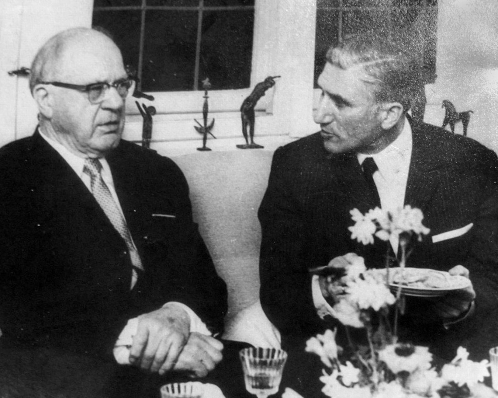
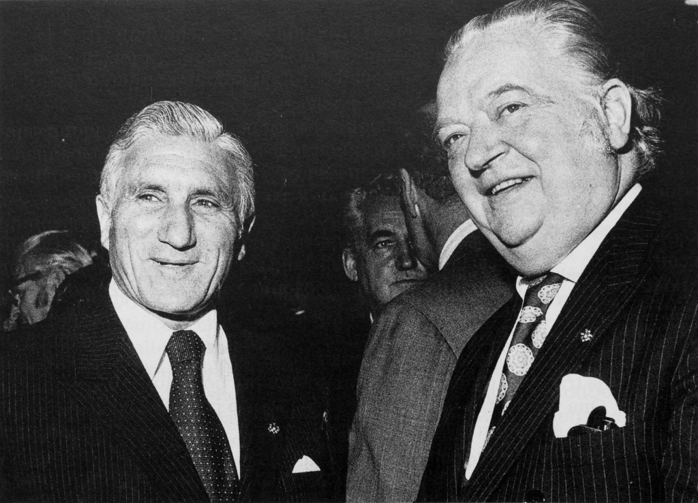
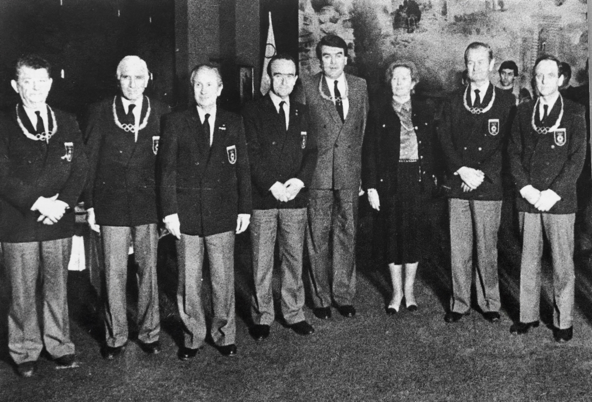
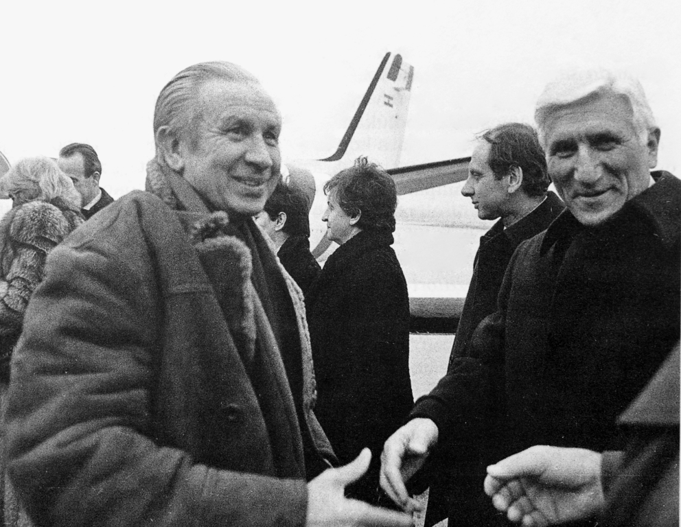

Artur Takač i MOO
KRONOLOGIJA
1948.
na Olimpijskim igrama u Londonu imao je funkciju voditelja i kapetana jugoslavenske atletske reprezentacije
1952.
voditelj atletske ekipe bio je na OI u Helsinkiju
1960.
voditelj atletske ekipe na OI u Rimu
1962.
voditelj atletske ekipe na OI u Tokiju
1964.
tehnički direktor MOO
1968.
na OI u Mexico Cityju bio je savjetnik Organizacijskog odbora za pripremu atletskih natjecanja
1969. - 1973.
obnaša funkciju tehničkog direktora MOO-a


Artur Takač u društvu predsjednika Međunarodnog olimpijskog odbora Averyja Brundagea, oko 1970., GMV 1368/2005
1972.
tehnički delegat na OI u Münchenu
1976.
tehnički delegat i osobni savjetnik predsjednika Organizacijskog odbora na OI u Montrealu 1976.

Predsjednik MOO, lord Killanin i Artur Takač uu prvom radnom posjetu organizatorima OI u Montrealu, Montreal, 1972., GMV 106596
1980. - 1984.
tehnički direktor Zimskih OI u Sarajevu

Juan Antonio Samaranch je za izuzetan trud pri organizaciji OI u Sarejevu podijelio šest olimpijskih ordena. Artur takač je bio među odlikovanim., Sarajevo, 1984., GMV 106597
1984. - 1995.
tadašnji predsjednik MOO-a Juan Antonio Samaranch imenovao ga je svojim osobnim savjetnikom u obavljanju Predsjedničke funkcije
